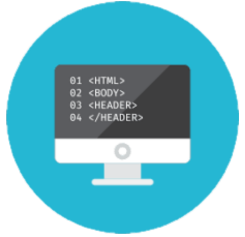

Découvrez les métiers possibles après BUT informatique et plus encore !
Parcour A
Le parcour A est celui de la création d'application, de base de données et du web. Tu peux le retrouver dans notre BUT.
Parcour B
Le parcour A est celui de la création d'application, de base de données et du web. Tu peux le retrouver dans notre BUT.
Parcour C
Le parcour A est celui de la création d'application, de base de données et du web. Tu peux le retrouver dans notre BUT.